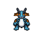
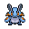

Pokédex / #260

Swampert #260
WaterGround
Its arms are hard as rock. With one swing, it can break a boulder into pieces.
Generation 3 · Hoenn

Stats
| Attack | 100 | |
|---|---|---|
| Defense | 90 | |
| Sp. Atk | 85 | |
| Sp. Def | 90 |
In the wild
| Wild level | 85–95 |
|---|---|
| HP | 100 |
| Experience | 15 |
| Egg groups | Monster, Water 1 |
Evolution
- Evolves from Marshtomp at level 55.
Moves
| Level | Move | Type | Category | Power | Energy | Cooldown | Effect | |
|---|---|---|---|---|---|---|---|---|
| 1 | Tackle | Normal | Physical | 15 | 15 | 1s | Tackle is one of the most common and basic moves a Pokemon learns. It deals damage with no additional effects. | |
| 5 | Water Gun | Water | Special | 40 | 45 | 9s | Water Gun inflicts damage and has no secondary effect. | |
| 10 | Mud-Slap | Ground | Special | 20 | 30 | 10s | Mud-Slap deals damage and lowers the target's Accuracy by one stage. | |
| 15 | Rock Throw | Rock | Physical | 50 | 50 | 8s | Rock Throw deals damage and has no secondary effect. | |
| 20 | Take Down | Normal | Physical | 90 | 90 | 14s | Take Down deals damage and has no secondary effect. | |
| 25 | Mud Shot | Ground | Special | 55 | 60 | 9s | Mud Shot deals damage and lowers the target's Speed by one stage. | |
| 30 | Waterfall | Water | Physical | 80 | 90 | 15s | Waterfall does damage and has a 20% chance of causing the target to flinch. | |
| 40 | Muddy Water | Water | Special | 9 | 100 | 22s | Muddy Water deals damage and has a 30% chance of lowering the target's Accuracy by one stage. | |
| 45 | Rock Slide | Rock | Physical | 38 | 85 | 17s | Rock Slide deals damage and has a 30% chance of causing the target to flinch. | |
| 50 | Earthquake | Ground | Physical | 50 | 110 | 23s | Earthquake deals damage. | |
| 60 | Protect | Normal | Status | – | 70 | 60s | Protect raises the user's Defense by two stages. | |
| 65 | Hammer Arm | Fighting | Physical | 100 | 100 | 15s | Hammer Arm does damage, then lowers the user's Speed by one level. | |
| 70 | Bide | Normal | Physical | – | 200 | 30s | The user of Bide 'stores energy' for 2 turns. At the end of the second turn the Pokemon 'unleashes energy', dealing twice the HP damage it received. | |
| 75 | Scald | Water | Special | 80 | 90 | 19s | The user shoots boiling hot water at its target. This may also leave the target with a burn. |
Field abilities
SurfStrengthRock SmashWaterfallDive
Special abilities
Torrent
Egg moves
Ancient PowerAvalancheBarrierBiteCounterCurseDouble-EdgeIce BallMirror CoatMud BombRefreshSludgeStompUproarYawn
Technical machines
BlizzardBrick BreakDouble TeamEarthquakeEarthquakeFocus PunchHailHyper BeamIce BeamProtectRain DanceRestRoarRock SlideRock SlideRock TombSubstituteToxic
Drops
| Item | Amount | Chance | |
|---|---|---|---|
| water gem | 1–12 | 93.8% | |
| razor fang | 1–3 | 53.6% | |
| pot of water | 1 | 30% | |
| shadow rock | 1 | 26.8% | |
| hard nail | 1 | 25% | |
| blue sphere | 1 | 25% | |
| cutting fang | 1 | 15% | |
| rare sandbag | 1 | 10.7% | |
| onigiri | 1–5 | 5% | |
 | swampert doll | 1 | 0.1% |
| Splash Plate | 1 | 0.05% | |
| Earth Plate | 1 | 0.05% | |
| TM 12 | 1 | 0.01% | |
| TM 45 | 1 | 0.01% | |
| TM 59 | 1 | 0.01% | |
| TM 54 | 1 | 0.01% | |
| held mystic water | 1 | 0.01% | |
| held soft sand | 1 | 0.01% |